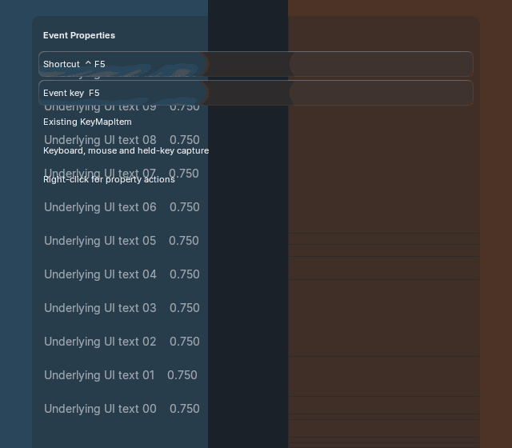
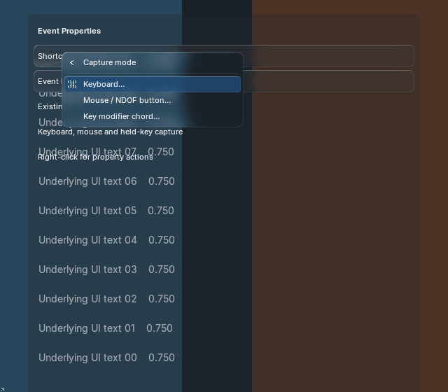
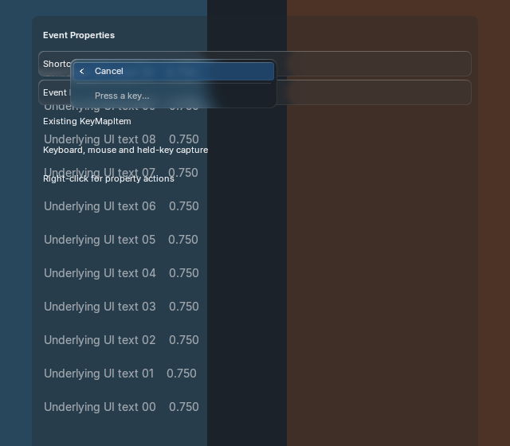
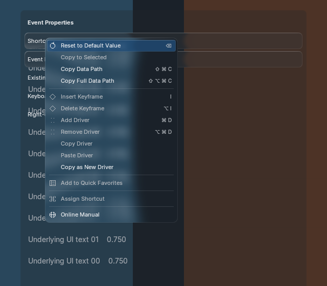

Actual Blender 5.2.2 Metal frames using the existing BVT field/menu skin, shared liquid glass, theme roles and finite springs. No new visual design or generated-reference acceptance is claimed.




Full-event editing preserves the existing KeyMapItem's activation settings; conflicts, stale owners and host commit failures are rejected. Escape/right-click cancel before any write.
5.2 RNA cases · 5.1 RNA cases · Real 5.2 window events · Real 5.1 window events · Resources, timing and source hashes · Official API source audit · Supported semantics and open gaps · 15% numeric motion comparison